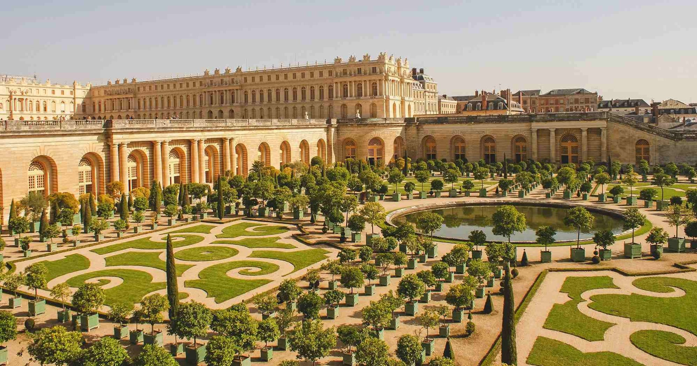
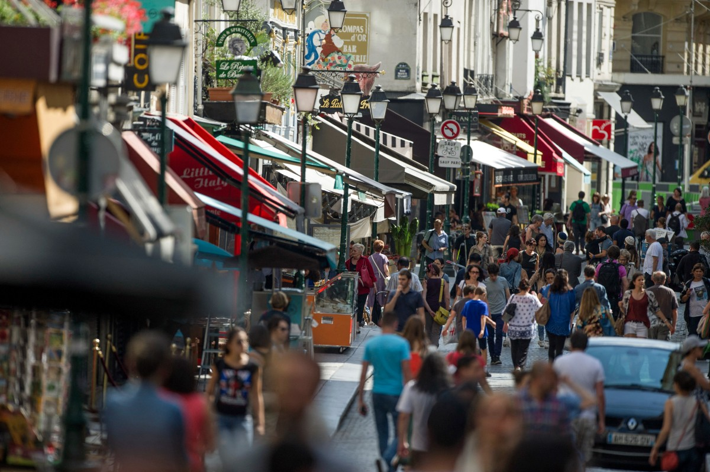
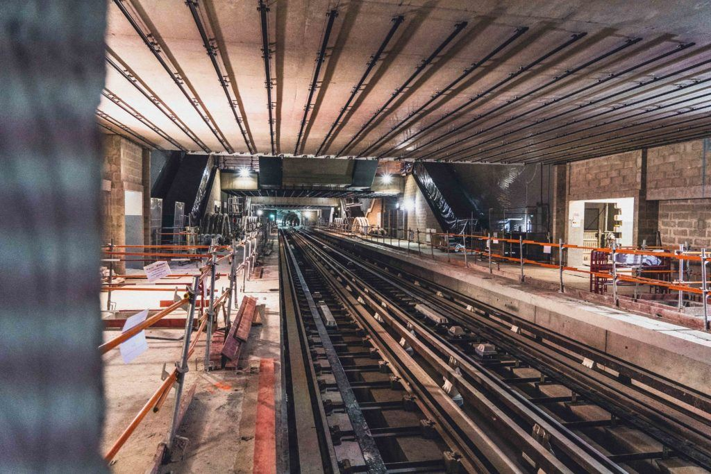
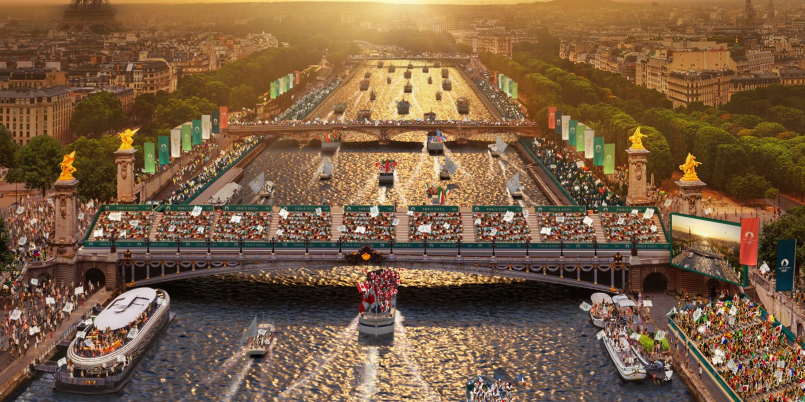

Analyse
Valorisation du patrimoine et attractivité touristique
Les Jeux Olympiques de Paris 2024 ont permis de mettre en avant des sites emblématiques de la France, comme le Château de Versailles, la Tour Eiffel ou encore le Stade de France. Ces lieux, choisis stratégiquement pour accueillir des épreuves sportives ou des événements cérémoniels, ont servi de vitrine mondiale pour le patrimoine historique et culturel de la France.
Par exemple, le Château de Versailles a accueilli les épreuves équestres, offrant à ce site prestigieux une visibilité internationale. La Tour Eiffel a été mise en avant lors des cérémonies d'ouverture et de clôture, et des retransmissions télévisées, faisant rayonner l'image de Paris à travers le monde. Ce type de promotion a renforcé l’image de la France comme une destination touristique de premier plan, attirant non seulement les spectateurs des JO mais aussi de futurs visiteurs.
En termes économiques, ces choix devraient avoir des retombées durables grâce à l’afflux de touristes qui redynamiseront les secteurs de l’hôtellerie, de la restauration et des services locaux. Les investissements dans la préservation et l’aménagement de ces sites pour accueillir les JO auront également des effets positifs sur leur attractivité à long terme.
Dynamisme économique local
L’organisation des Jeux Olympiques a généré une activité économique intense dans les zones proches des sites sportifs et événementiels. Les commerces locaux, qu’il s’agisse de cafés, restaurants, hôtels ou boutiques, ont vu une augmentation notable de leur chiffre d’affaires grâce à l’afflux de spectateurs, d’athlètes et de touristes. Par exemple, à proximité du Stade de France à Saint-Denis, les restaurants et hôtels ont connu un véritable boom économique.
En outre, des milliers d’emplois temporaires ont été créés pour répondre aux besoins liés à l’organisation des JO, notamment dans les domaines de la logistique, de la sécurité, de l’accueil et des transports. Ces emplois ont offert des opportunités à des populations souvent éloignées du marché du travail, contribuant à un dynamisme social important dans des zones comme La Seine-Saint-Denis.
Amélioration des infrastructures
Les Jeux Olympiques ont également servi de catalyseur pour la modernisation des infrastructures de transport en Île-de-France. Par exemple, le prolongement de la ligne 14 du métro a été achevé avant les JO, facilitant l'accès au Stade de France et à d’autres sites. Cette amélioration bénéficiera également aux habitants au-delà de l'événement, réduisant la saturation des transports dans la région.
Des investissements ont également été réalisés pour rendre les stations de métro accessibles aux personnes à mobilité réduite, ce qui profitera à tous les utilisateurs des transports publics sur le long terme.
Promotion de la cohésion sociale et de la fierté nationale
Les Jeux Olympiques ont été l’occasion de rassembler les Français autour d’un événement fédérateur. Les cérémonies spectaculaires, les victoires françaises et les performances athlétiques ont suscité un sentiment de fierté nationale et d’unité. Les cérémonies d’ouverture et de clôture, diffusées à l'international, ont rassemblé les citoyens autour des valeurs universelles de solidarité et de dépassement de soi. Les victoires des athlètes français, comme celles de l’équipe de basket ou de judoka, ont renforcé cette cohésion et ont été célébrées dans toute la France.
Les festivités organisées autour des épreuves ont également permis aux habitants de vivre des moments de célébration et de convivialité, notamment lors des fan zones, créant une atmosphère joyeuse et unie à l’échelle nationale.
Héritage sportif et éducatif
Les infrastructures construites ou rénovées pour les Jeux Olympiques constituent un legs important pour la pratique sportive en France. Par exemple, des équipements comme des piscines et des stades, tels que le Stade Pierre-Mauroy à Lille, resteront accessibles aux clubs sportifs locaux, aux écoles et aux habitants après les JO, offrant ainsi des opportunités accrues pour pratiquer une activité physique.
De plus, la médiatisation de l’événement a permis de promouvoir les bienfaits du sport, notamment auprès des jeunes. Des programmes scolaires ont été mis en place pour encourager les enfants et les jeunes adultes à pratiquer des activités sportives régulières, contribuant à une meilleure santé publique à long terme.